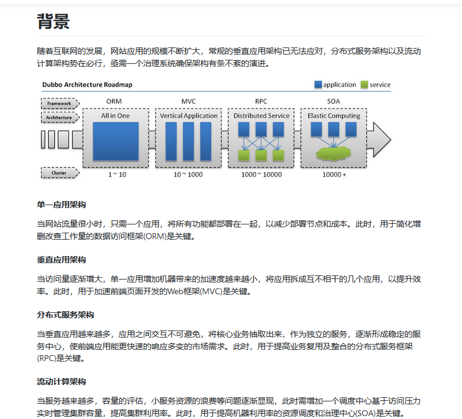
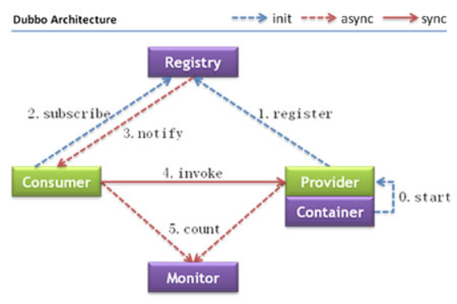
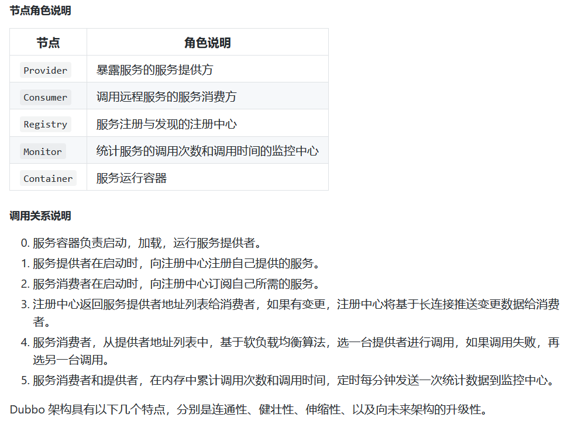
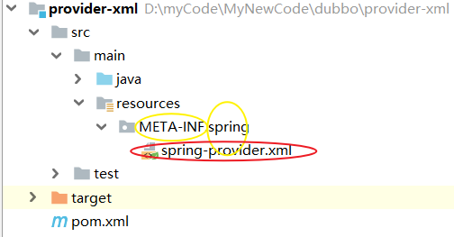
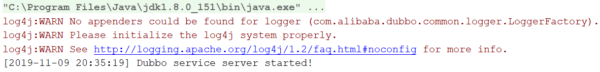
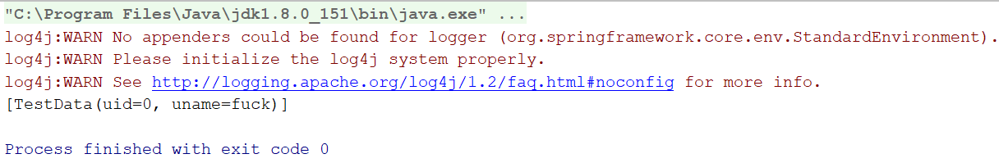

一、Dubbo诞生背景（摘自Dubbo官网-入门-背景）

二、Dubbo架构图（摘自Dubbo官网-入门-架构）


三、Dubbo核心依赖（jar包）：dubbo、zkclient
四、Dubbo项目搭建的方式：配置文件式、注解式
五、Dubbo项目配置文件的核心配置：
(一)配置文件式
1. 服务提供方（下示例）：①应用名②协议(建议dubbo协议)③注册中心④暴露的具体服务接口⑤注册暴露的具体服务接口的实现类bean对象
<?xml version="1.0" encoding="UTF-8"?>
<beans xmlns="http://www.springframework.org/schema/beans"
xmlns:dubbo="http://code.alibabatech.com/schema/dubbo"
xmlns:xsi="http://www.w3.org/2001/XMLSchema-instance"
xsi:schemaLocation="http://www.springframework.org/schema/beans
http://www.springframework.org/schema/beans/spring-beans.xsd
http://code.alibabatech.com/schema/dubbo
http://code.alibabatech.com/schema/dubbo/dubbo.xsd">
<!--配置提供服务方应用信息，用于计算依赖关系-->
<dubbo:application name="provide-xml"/>
<!--配置协议（用dubbo协议在20880端口(dubbo协议默认端口)暴露服务）-->
<dubbo:protocol name="dubbo" port="20880"/>
<!--配置注册中心，以暴露服务地址-->
<dubbo:registry address="zookeeper://192.168.110.11:2181"/>
<!--配置暴露服务的接口-->
<dubbo:service interface="com.bjsxt.dubbo.service.ITPService_xml" ref="dataServiceImpl"/>
<!--注册暴露的服务接口的实现类的bean对象-->
<bean id="dataServiceImpl" class="com.bjsxt.dubbo.service.impl.ITPServiceImpl_xml"/>
</beans>2. 服务消费方(下示例)：①应用名②注册中心③要调用的提供方所暴露的具体服务接口
<?xml version="1.0" encoding="UTF-8"?>
<beans xmlns="http://www.springframework.org/schema/beans"
xmlns:dubbo="http://code.alibabatech.com/schema/dubbo"
xmlns:xsi="http://www.w3.org/2001/XMLSchema-instance"
xsi:schemaLocation="http://www.springframework.org/schema/beans
http://www.springframework.org/schema/beans/spring-beans.xsd
http://code.alibabatech.com/schema/dubbo
http://code.alibabatech.com/schema/dubbo/dubbo.xsd">
<!--配置消费方应用名，用于计算依赖关系，不是匹配条件，不要与提供方一样-->
<dubbo:application name="consumer-xml"></dubbo:application>
<!--配置注册中心，暴露发现服务地址-->
<dubbo:registry address="zookeeper://192.168.110.11:2181"/>
<!--声明所要调用的服务提供方暴露的服务接口（前提：已经将该接口复制到消费方的业务层中）-->
<dubbo:reference interface="com.bjsxt.dubbo.service.ITPService_xml" id="iTPService"/>
</beans>(二)注解式
1. 服务提供方（下示例）：①应用名②协议③注册中心④dubbo注解扫描
<?xml version="1.0" encoding="UTF-8"?>
<beans xmlns="http://www.springframework.org/schema/beans"
xmlns:dubbo="http://code.alibabatech.com/schema/dubbo"
xmlns:xsi="http://www.w3.org/2001/XMLSchema-instance"
xsi:schemaLocation="http://www.springframework.org/schema/beans
http://www.springframework.org/schema/beans/spring-beans.xsd
http://code.alibabatech.com/schema/dubbo
http://code.alibabatech.com/schema/dubbo/dubbo.xsd">
<!--配置提供服务方应用信息，用于计算依赖关系-->
<dubbo:application name="provide-annotation"/>
<!--配置协议（用dubbo协议在20880端口(dubbo协议默认端口)暴露服务）-->
<dubbo:protocol name="dubbo" port="20880"/>
<!--配置注册中心，以暴露服务地址-->
<dubbo:registry address="zookeeper://192.168.110.11:2181"/>
<!--配置dubbo注解扫描(注解式：利用dubbo的注解@Service来代替配置式的另外两个配置)-->
<dubbo:annotation package="com.bjsxt.dubbo.service.impl"/>
</beans>2. 服务消费方(下示例)：①应用名②注册中心③dubbo注解扫描④声明调用暴露的具体服务接口的业务层实现类bean对象
<?xml version="1.0" encoding="UTF-8"?>
<beans xmlns="http://www.springframework.org/schema/beans"
xmlns:dubbo="http://code.alibabatech.com/schema/dubbo"
xmlns:xsi="http://www.w3.org/2001/XMLSchema-instance"
xsi:schemaLocation="http://www.springframework.org/schema/beans
http://www.springframework.org/schema/beans/spring-beans.xsd
http://code.alibabatech.com/schema/dubbo
http://code.alibabatech.com/schema/dubbo/dubbo.xsd">
<!--配置消费方应用名，用于计算依赖关系，不是匹配条件，不要与提供方一样-->
<dubbo:application name="consumer-annotation"></dubbo:application>
<!--配置注册中心，暴露发现服务地址-->
<dubbo:registry address="zookeeper://192.168.110.11:2181"/>
<!--配置dubbo注解扫描-->
<dubbo:annotation package="com.bjsxt.dubbo.service.impl"/>
<!--配置服务消费者调用提供方暴露的服务接口的业务实现类bean对像-->
<bean id="iTServiceConsumerImpl_SSM" class="com.bjsxt.dubbo.service.impl.ITServiceConsumerImpl_SSM"/>
</beans>六、示例-简单实现Dubbo项目：
(〇)本人测试项目的环境搭建（极简）：
①maven下Java的quickstart模板②没有用SSM框架③注册中心选用zookeeper，安装在Linux虚拟机中
④没有面向对象三层架构中的持久层，只有数据类pojo/entity（测试数据自己在服务方暴露的服务接口的实现类的测试方法中自设定）
(一)配置文件式
1. 项目代码：
(1)服务提供方：
①数据类pojo/entity
package com.bjsxt.dubbo.pojo;
import lombok.Data;
import java.io.Serializable;
@Data
public class TestData implements Serializable {
private Integer uid;
private String uname;
}②业务层service
i. 暴露的服务接口
package com.bjsxt.dubbo.service;
import com.bjsxt.dubbo.pojo.TestData;
import java.util.List;
public interface ITPService_xml {
//查询测试数据
List<TestData> selectTestData();
}ii. 暴露的服务接口的实现类
package com.bjsxt.dubbo.service.impl;
import com.bjsxt.dubbo.pojo.TestData;
import com.bjsxt.dubbo.service.ITPService_xml;
import org.springframework.stereotype.Service;
import java.util.ArrayList;
import java.util.List;
/**
* spring框架中的@Autowired注解、@Resource注解和@Service注解
* @Autowired注解 省去了 在xml中<bean>配置的 <property> 和在对应<bean> 类中 属性的set、get方法
* @Resource注解 和@Autowired注解 极为相似
* @Service注解 省去了 在xml中<bean>的配置 ！ 实现 xml零配置
* 详情：再说~
*/
@Service
public class ITPServiceImpl_xml implements ITPService_xml {
//查询测试数据(省略持久层，自定义测试数据)
@Override
public List<TestData> selectTestData() {
ArrayList<TestData> list=new ArrayList<>();
TestData testData=new TestData();
testData.setUid(0);
testData.setUname("fuck");
list.add(testData);
return list;
}
}(2)服务消费方：
①数据类pojo/entity：同上
②业务层service：将服务提供方暴露的服务接口的代码复制过来，即可
2. 启动方式：
(1)服务提供方：
①API加载配置文件（本人没写这种方式）（可以参考下面的服务消费方的启动方式，也可以看Dubbo官网给出的示例代码）：
import org.springframework.context.support.ClassPathXmlApplicationContext;
public class Provider {
public static void main(String[] args) throws Exception {
ClassPathXmlApplicationContext context = new ClassPathXmlApplicationContext(new String[] {"http://10.20.160.198/wiki/display/dubbo/provider.xml"});
context.start();
System.in.read(); // 按任意键退出
}
}②利用dubbo服务运行容器的main方法：
前提：将spring配置文件安放在META-INF目录下的spring目录中，否则dubbo服务运行容器找不到spring配置文件

package com.bjsxt.dubbo;
import com.alibaba.dubbo.container.Main;
public class AppTest {
/**
* 通过加载spring配置文件，以启动dubbo的服务运行容器Container
* （该容器是spring类型的容器，
* dubbo配置式启动方法，除了直接加载spring配置文件，
* 再就是下面的通过dubbo中的Main类加载spring配置文件
* ——该方法须要将spring配置文件放在“META-INF”目录下的“spring”目录中）
*/
public static void main(String[] args) {Main.main(args);}
}【运行结果·图】（前提：已经启动zookeeper注册中心，注册中心启动成功图略）（注：运行后，须手动关闭）

(2)服务消费方：API加载配置文件
package com.bjsxt.dubbo;
import com.bjsxt.dubbo.pojo.TestData;
import com.bjsxt.dubbo.service.ITPService_xml;
import org.junit.Test;
import org.springframework.context.ApplicationContext;
import org.springframework.context.support.ClassPathXmlApplicationContext;
import java.util.List;
/**
* 这里只是简单的测试一下，不涉及web，服务提供方也不涉及持久层
*/
public class AppTest {
@Test
public void test(){
/*加载spring配置文件*/
ApplicationContext ac=new ClassPathXmlApplicationContext("spring-consumer.xml");
/*通过配置文件反射获取暴露的服务接口的业务层对象*/
ITPService_xml itpService_xml = ac.getBean("iTPService", ITPService_xml.class);
/*获取服务返回值*/
List<TestData> list=itpService_xml.selectTestData();
/*输出*/
System.out.println(list);
}
}【运行结果·图】

(二)注解式
1. 项目代码：
(1)服务提供方：
①数据类pojo/entity：同上
②业务层service：同上
(2)服务消费方：
①数据类pojo/entity：同上
②业务层service：
i. 将服务提供方暴露的服务接口的代码复制过来
ii. 创建调用服务接口的消费方接口，及其实现类
package com.bjsxt.dubbo.service;
import com.bjsxt.dubbo.pojo.TestData;
import java.util.List;
public interface ITServiceConsumer_SSM {
//显示测试数据
List<TestData> show();
}package com.bjsxt.dubbo.service.impl;
import com.alibaba.dubbo.config.annotation.Reference;
import com.bjsxt.dubbo.pojo.TestData;
import com.bjsxt.dubbo.service.ITService_SSM;
import org.springframework.stereotype.Service;
import java.util.List;
@Service
public class ITServiceConsumerImpl_SSM implements com.bjsxt.dubbo.service.ITServiceConsumer_SSM {
@Reference
private ITService_SSM itService_ssm;
@Override
public List<TestData> show() {
return itService_ssm.selecte();
}
}2. 启动方式：
(1)服务提供方：同上
(2)服务消费方：同上
(三)对比两种方式的不同：
1. 服务提供方
(1)配置文件：①配置文件式：
i. 需要专门配置：暴露的服务接口、声明暴露的服务接口的业务层实现类的bean对象
ii. 不需要配置：dubbo注解扫描
②注解式：
i. 需要专门配置：dubbo注解扫描
ii. 不需要配置：暴露的服务接口、声明暴露的服务接口的业务层实现类的bean对象
(2)注解：①配置文件式：业务层中，暴露的服务接口的实现类的注解@Service是spring框架的
②注解式：业务层中，暴露的服务接口的实现类的注解@Service是dubbo依赖的
2. 服务消费方：
(1)配置文件：①配置文件式：
i. 不需要配置：dubbo注解扫描
②注解式：
i. 需要专门配置：dubbo注解扫描
ii. 不需要配置：暴露的服务接口、声明暴露的服务接口的业务层实现类的bean对象
(2)注解：注解式：业务层中，暴露的服务接口的实现类里：①注解实现类的@Service是dubbo依赖的②声明服务提供方暴露的服务接口的实现类对象的属性的注解是dubbo依赖里的@Reference
七、个人总结：
1. 配置文件：
(1)服务提供方必须有的配置参数：提供方应用名、协议、注册中心
(2)服务消费方必须有的配置参数：消费方应用名、注册中心
2. 配置式区别于注解式之处
(1)配置文件-服务提供方：须要具体配置每一个暴露的服务接口，以及该接口所对应的实现类bean对象；注解式则只需要配置dubbo扫描即可
(2)配置文件-服务消费方：须要配置所要调用的服务接口(提供方暴露的)；注解式则须要再多配置dubbo扫描、自身调用服务接口(提供方暴露的)的实现类
(3)业务层-服务提供方：服务接口(暴露的)的实现类中，使用spring的@Service注解该实现类；注解式则须要用dubbo的@Service（com.alibaba.dubbo.config.annotation.Service;）来注解该实现类
(4)业务层-服务消费方：
①配置式的消费方，可以在启动时（消费方的启动方式只有API加载配置文件这一种）通过反射设直接生成被调用的服务接口的对象（多态+反射），利用该对象完成操作
②注解式的消费方，是通过自身创建的某个接口的实现类，在这个实现类里面去调用提供方暴露的服务接口：
i.须要用spring的@Service（org.springframework.stereotype.Service）来注解该实现类;
ii. 这个实现类里面需要声明被调用的服务接口（提供方暴露的）的对象，该对象须要用dubbo的@Reference（com.alibaba.dubbo.config.annotation.Reference;）来注解
（不可以用spring的@Resource来注解）
3. 配置式相同于注解式之处：都须要将服务提供方暴露的服务接口的源文件复制到服务消费方的业务层中
4. 启动方式：
(1)API加载xml配置文件：略（详情见上面的示例）
(2)dubbo服务运行容器启动：
①只限于服务提供方（因为只有服务提供方有dubbo服务运行容器，可参考Dubbo架构图）
②须要将配置文件放置在META-INF目录下的spring目录中（目录名不可以拼错！！！否则会找不到配置文件的）
③使用dubbo的Main类（com.alibaba.dubbo.container.Main;）的main方法启动